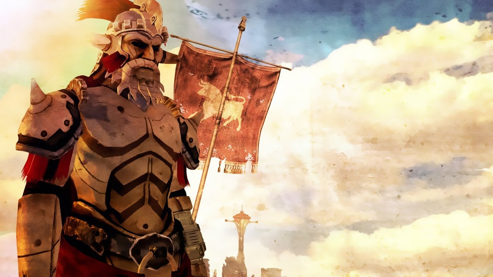
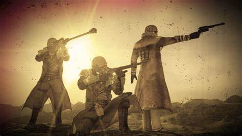
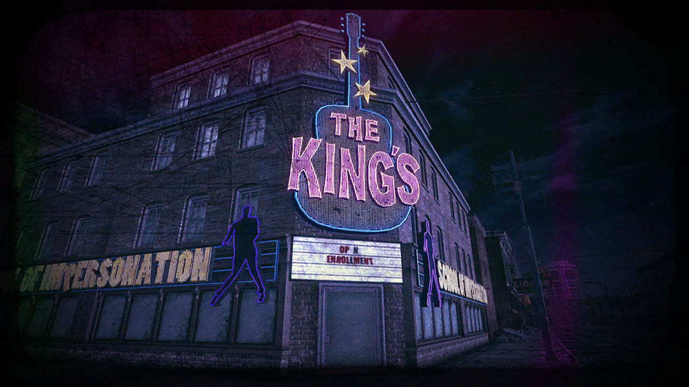

Since the dawn of the human race, we have told stories. There have been stories of fantastic lands that connect to the world we know today, and stories that reference something in an obscure method. The entertainment industry thrives off of these facts, producing books, movies, video games, and other media that cater to humanity's predilection for storytelling. The industry holds a high standard for historical references and pop culture references in most media, but video games often don't receive the credit they deserve for their historical accuracy or pop culture references. Game publishers often construct games around historical events or on a pop culture fad, but some games do a good job integrating these aspects less directly; one game that integrates history and pop culture seamlessly is Fallout: New Vegas.
Since the dawn of the human race, we have told stories. There have been stories of fantastic lands that connect to the world we know today, and stories that reference something in an obscure method. The entertainment industry thrives off of these facts, producing books, movies, video games, and other media that cater to humanity's predilection for storytelling. The industry holds a high standard for historical references and pop culture references in most media, but video games often don't receive the credit they deserve for their historical accuracy or pop culture references. Game publishers often construct games around historical events or on a pop culture fad, but some games do a good job integrating these aspects less directly; one game that integrates history and pop culture seamlessly is Fallout: New Vegas.
Fallout: New Vegas is a western-style post-apocalyptic roleplaying game developed by Obsidian Entertainment, and published by Bethesda. Bethesda released the game on October 19th, 2010 in the United States, and worldwide in the following days. The game takes place in a post-apocalyptic Nevada following a nuclear war, known as the Great War. Several groups are vying for control of the city of New Vegas and ultimate control of the Mojave wasteland, and the player character decides which group to help seize control of the area. Despite the praise that the game received for its story, there were significant backlashes from critics. They criticized it for its bugs and use of the same engine as the previous game in the series. When Bethesda outsourced the game to Obsidian Entertainment and one of the founders of the Fallout series, they gave them a severe time limitation. Bethesda allowed Obsidian Entertainment eighteen months to develop the game, forcing a severe time crunch, despite the reuse of the game engine from Fallout 3. Regardless of the limitation, Obsidian Entertainment pulled together a creative game, making numerous pop culture and historical references. The list of known cultural references and historical references in Fallout: New Vegas is extensive; however, instead of listing them off, I'll draw attention to a few primary historical references and some fun pop culture references and draw on their importance.

Caesar's Legion | The Legate

New California Republic | Rangers

The King's School of Impersonation